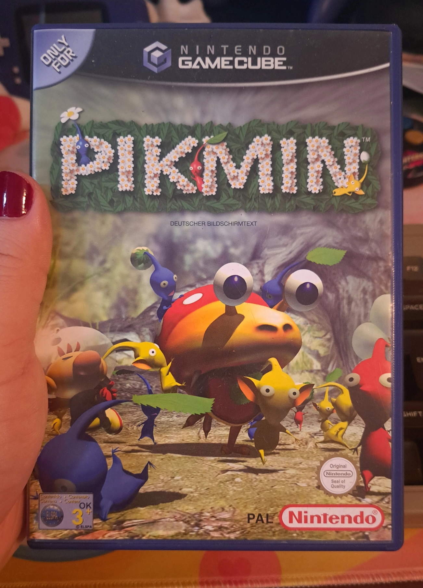
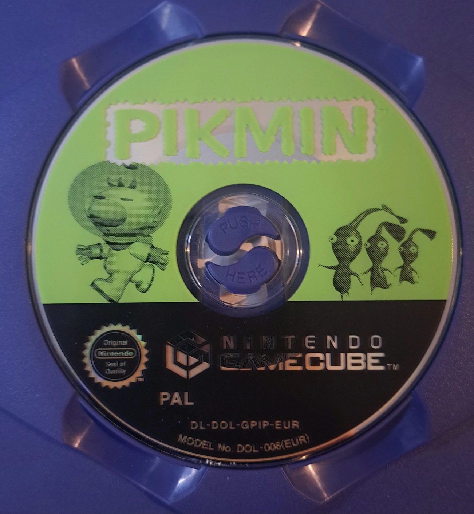

Pikmin
Developed and published by: Nintendo
Platforms:
- Nintendo GameCube
- Nintendo Wii (New Play Control)
- Nintendo Switch (Port)
Released in:
- 2001
- 2008/2009 (New Play Control)
- 2023 (Switch Port)
Also owned on: Nintendo Switch
Completed? Yes !


Box Art of the original GameCube release

Game disc
Pikmin
Developed and published by: Nintendo
Platforms:
Released in:
Also owned on: Nintendo Switch
Completed? Yes !
At Spaceworld 2000, Nintendo first unvailed their then new and upcoming console: The GameCube ! With it, they showed of multiple tech demos to demonstrate the strengths of the GameCube's hardware. One of these demos was called Super Mario 128. It featured a total of 128 Marios walking around on a circular surface and interacting with eachother, all at the same time.
This demo would become the game we now know as Pikmin, only a year later !
In Pikmin you play as Captain Olimar, a space pilot from Planet Hocotate, who crashes on a familiar-looking blue planet. At the crash site, Olimar discovers his space ship, the S.S. Dolphin, completely wrecked... What's worse is, that the atmosphere of the planet he crashed on is filled with highly toxic oxygen, and that Olimars air supply would only last him around 30 days at best !
Luckily he's not alone ! The Pikmin, which inhabit the planet Olimar finds himself on, are here to help !
Your job as Olimar is it, to collect all of your ship parts, which were scattared around the continent, together with the help of the Pikmin, in the hopes of making it home to Planet Hocotate, before Captain Olimar meets his untimely demise from oxygen poisoning !
There are three Pikmin types, which Olimar will encounter on his Journey. First of the red Pikmin, which are resistant to fire and the overall strongest Pikmin type, the yellow Pikmin, which can be thrown higher than the other Pikmin and are able to pick up bombs, and last but not least the blue Pikmin, which can survive underwater !
On your adventure you will need the help of a lot of Pikmin ! The population of Pikmin can grow, by either bringing Pelets of the corresponding Pikmin color back to the Pikmin's Onions, or by defeating enemies and bringing those back to the Onions. The Pikmin Onions are basicaly the homes of the Pikmin. When the Pikmin bring a Pellet or a defeated enemy to the Onion, it will start shooting out a set of seeds which grow into Pikmin ! The Pikmin will also return to their respective Onions at night time.
By coordinating your Pikmin well, you'll be able to collect multiple ship parts before the sun sets ! This gives the game pretty good replay value, as it makes you want to come back time after time again to see, if you can get all of the ship parts with a few days left on the timer !
For example, my personal record is all 30 ship parts in only 19 days ! Maybe i should try beating that score someday !
Overall, Pikmin 1 was an amazing kickstarter for a wonderful game series ! While i presonaly prefer Pikmin 2, i still have a lot of fun with this game every single time i boot it up every now and then ! If you've never played a Pikmin game before i highly recommend checking this series out !
The entire series from Pikmin 1 all the way to Pikmin 4 is available on the Switch !